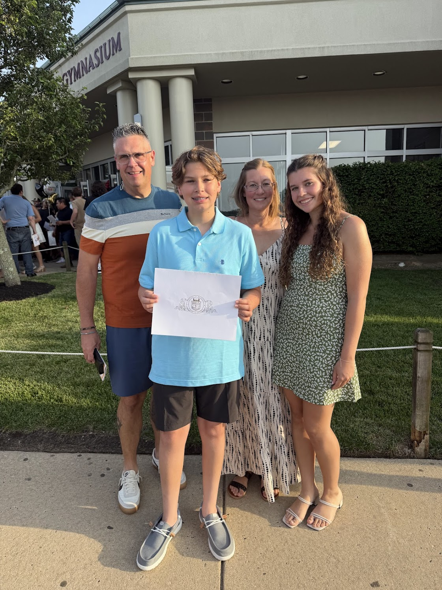

Hi! I’m Amanda Ernst, a computer science student at Quinnipiac University from Bayville, New Jersey. I’ve lived there my whole life and grew up surrounded by a strong support system of family, friends, and my pets; my boxer Milo and my cat Mavis. I first became interested in computer science during high school when I took an introductory technology class. At the time, I didn’t know much about coding, but I was really drawn to the problem-solving aspect of it. I liked the idea of being able to build something from nothing and figure out solutions step by step. The more I learned, the more I realized how creative programming can be, which made me want to continue studying it in college. Currently, I’m continuing to build my skills in programming and learning more about different areas of computer science through my coursework and personal projects. I enjoy challenging myself and improving a little more each day. Outside of academics, I have a huge passion for dance. I danced competitively for 12 years and now continue dancing as part of the Quinnipiac Dance Collective, where I serve as the Community Outreach Chair. I’m also very involved in my sorority, Gamma Phi Beta, where I hold positions as Fidelity and Lip Sync Chairwoman. These experiences have helped me develop leadership, teamwork, and communication skills. In my free time, I love going to the beach, traveling, spending time with friends and family, and of course hanging out with my pets. I’m always looking for new experiences and opportunities to grow both personally and professionally.
Feel free to reach out to me if you want to connect or collaborate on a project. I'm always open to new ideas and partnerships!
Contacts: ernstamanda05@gmail.com


